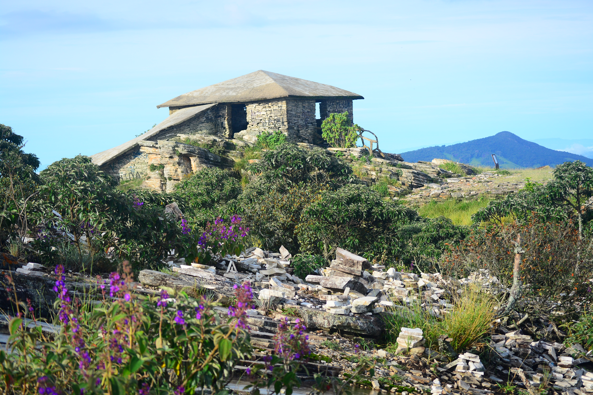
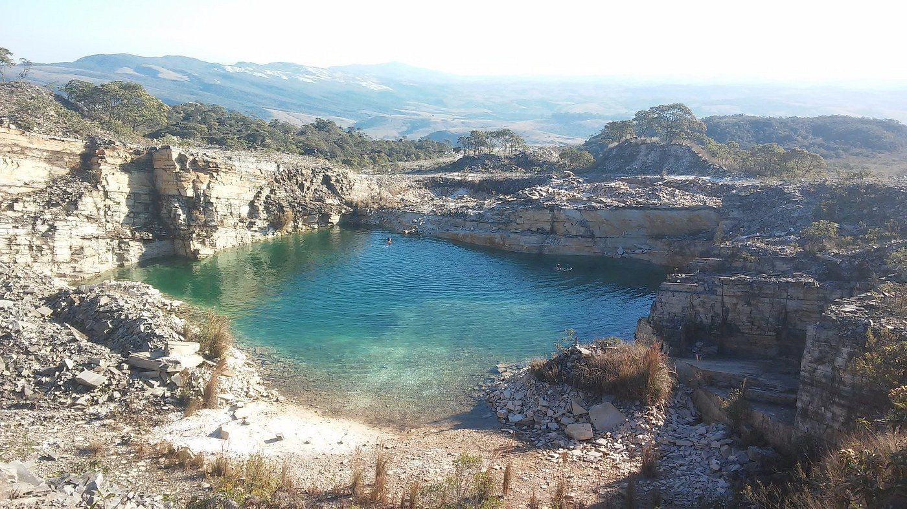
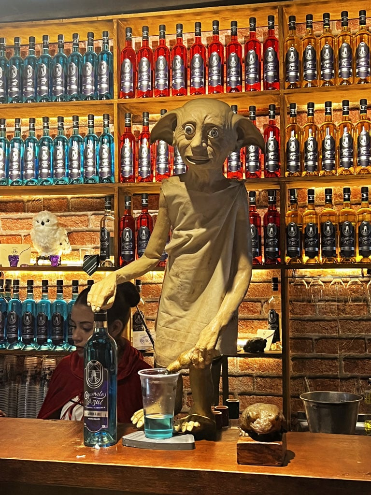

São Thomé das Letras
A cidade mística no coração das Minas Gerais.
São Thomé das Letras, a cidade no coração das Minas gerais, envolta em mistérios, misticismo e aparições, é um otimo local para o esoterismo, descanso, ecoturismo, campings e bares temáticos.
Dentre esses locais, podemos destacar:
A Casa da Piramide

Um dos destinos mais conhecidos e frequentados de São Tomé, a Casa da Piramide costuma ser frequentada por turistas que desejam ver o pör do sol, ficando sentados geralmente no seu teto de pedra contemplando o sol.
Lago da Pedreira

O lago da pedreira é um dos destinos que vale a pena ser conhecido, apesar de haver a proibição do nado ou mergulho no lago, ainda assim é uma bela visão devido a tonalidade da água.
Cachoeira Véu da Noiva

A cachoeira Véu da Noiva já nos oferece um local de uso para nado e mergulho de fora segura para os banhistas e tamém é um dos pontos mais procurados pelo ecoturismo na região.
Vale das Borboletas

Já o Vale das Borboletas, alem de oferecer a cachoeira, ainda oferece alguns poços, os quais voce pode escolher onde ficar, alem de lojinhas típicas na entrada e restaurantes.
Rota do Cogumelo Azul

Enquanto isso, para aqueles que curtem uma noite boêmia, existe a "Rota do Cogumelo Azul", um tour feito por conta própria em 4 bares temáticos de São Thomé das Letras. Iniciando na toca do cogumelo azul e ganhando um passaporte e o primeiro carimbo, o objetivo é visitar os três bares restantes conseguindo os demais carimbos e conquistando assim, alguns brindes.
Por fim existem muitos outros destinos misteriosos, como a Ladeira do Amendoim, uma ladeira que se deixado o carro em ponto morto sem freio, ele sobe a ladeira ao inves de descer, a sede da religiao Wicca no Brasil, a igreja da pracinha que é um ponto histórico da cidade entre outros.